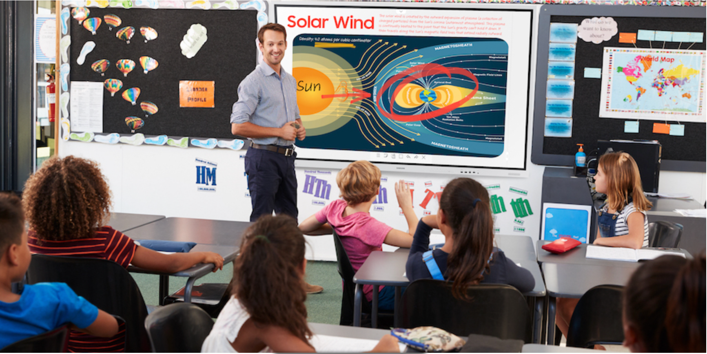
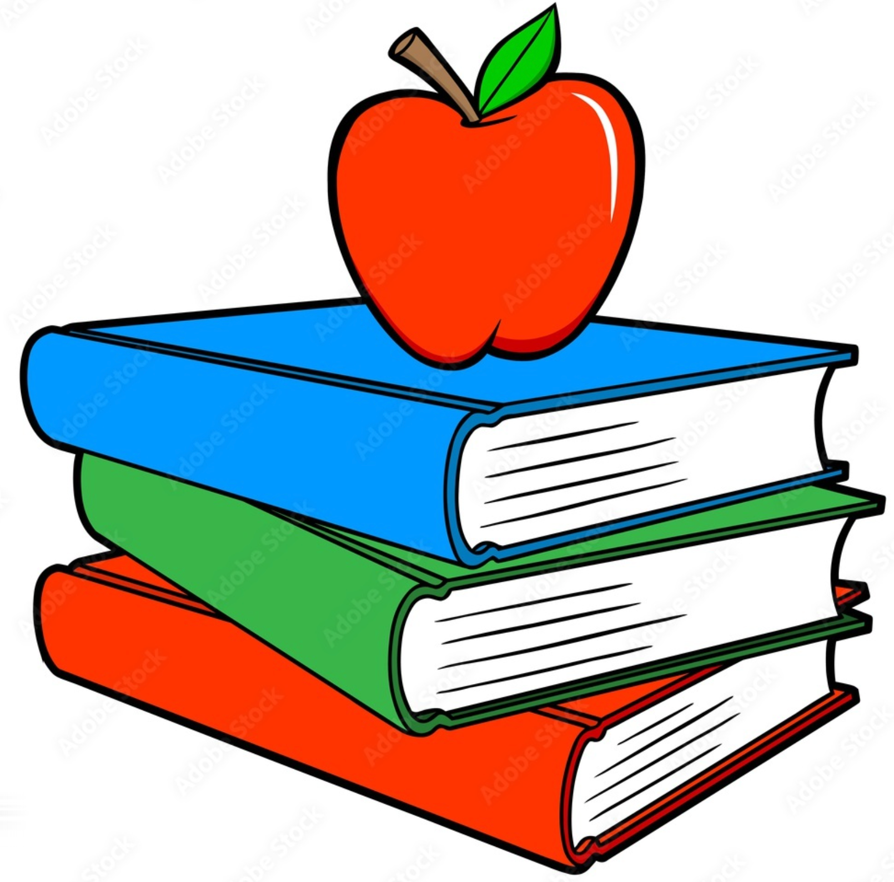
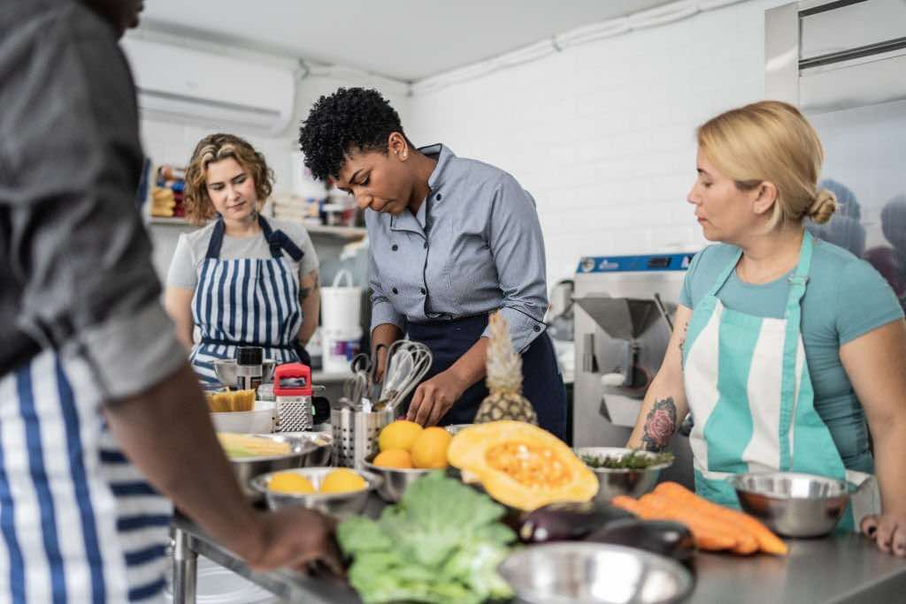

The current system moves at a rigid and static pace, disregarding the talents and interest of each unique student that goes through it. In my proposal, during the first few years of a child's education, the students will receive a general education, much in the same vein currently. Once the student reaches a certain point, lets say middle school, they can pick a focus depending on what subjects they enjoy the most and are best at.
We will offer the regular assortment of classes like math, science, history, reading, and writing. We would introduce engineering classes to help ready newer generations for the most in demand skills

At this point, the student will develop preferences and talents for some subjucst over others. The student can choose a field of focus so that hey can continue developing the skills that they enjoy and thrive at in a deeper level. They'll still take other courses, in a more general level, much like GE's in college. We can introduce more involved electives such as music, foreign language, and even classes that involve real world skills like mechanics and woodshop
Kids are now preparing for college or trade schools, and high school should get them ready. Students are continue their focused subjects, switching to a new focus while still receiving a general education. Classes preparing students for living on their own are now crucial, like managine financials, home repair, cooking, etc.

Classes should be structured to be involved and promote group work. Lectures should be kept to a minimum and arbitrary questions should be replaced with eal world scenario problems and hands on experiences. Testing should take a back seat to projects
Testing is a poor way to test someone's knowlege of a subject. It promotes memorization over understanding the subject matter as well as punishes students who might just be having an off day. Project-based learning allows for students to tackle a challenge in a more realistic manner. It allows them to ustilize the tools that they have at their disposal as well as allowing them to learn things that their course may not have even covered as they complete a project. It removes stress as a project can take multiple days, rather than an all or nothing for a single day
"An adaptable curriculum emphasizes the importance of connecting
academic concepts to real-world contexts. By integrating current
events, societal issues, and industry trends into the curriculum,
educators make learning more meaningful and relevant for students.
For instance, a history lesson on the impact of past pandemics can
help students understand the relevance of public health measures in
today’s world."
- DiYES International School
"With many individuals struggling to make better financial
decisions, it’s vital to equip students with the knowledge they need
to successfully navigate the world of personal finance."
- Commercial Bank of California
"Indeed, all paper and pencil tests are a waste of time, useless as
predictors of anything important unless the competition is rigged.
As a casual guide they are probably harmless, but as a sorting tool
they are corrupt and deceitful. A test of whether you can drive is
driving "
- John Taylor Gatto, "THE UNDERGROUND HISTORY OF AMERICAN EDUCATION"
"Oftentimes the students’ only priority is to pass the upcoming
test by memorizing the material, and when the next assessment comes
around, they’ve already forgotten the earlier information. Students
will do anything to pass their tests, going as far as being
dishonest and immoral, because they know they need a good grade.
"
- Matthew Steindecker